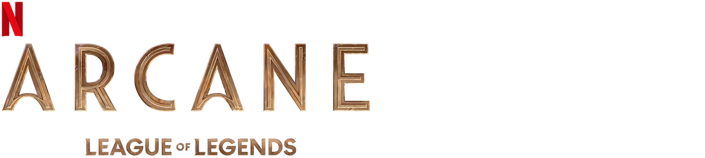
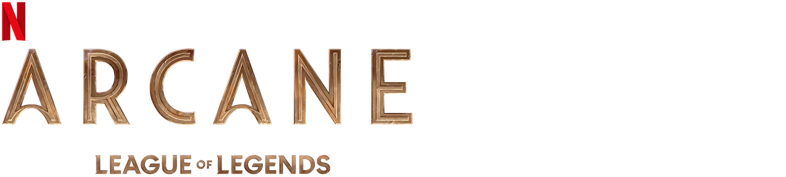

Arcane
Arcane é uma série de animação da Riot Games, lançada em 2021, que serve como uma expansão do universo do jogo "League of Legends". A trama se desenrola na cidade de Piltover e na Zona Cinza, explorando as origens de personagens conhecidos do jogo, como Jinx e Vi. Aqui está um resumo geral da série:
A história se passa em um mundo dividido entre duas cidades, Piltover e Zaun, cada uma representando diferentes estratos sociais. Piltover é uma cidade rica e tecnologicamente avançada, enquanto Zaun, situada abaixo dela, é uma área empobrecida e poluída conhecida como Zona Cinza.
A narrativa gira em torno das irmãs Jinx (Powder) e Vi (Viola), que começam como órfãs na Zona Cinza. Eles se envolvem com um criminoso chamado Silco, que possui suas próprias ambições de poder na cidade. A série explora a ascensão de Jinx como uma criminosa notória e como isso afeta a dinâmica entre os habitantes de Piltover e da Zona Cinza.
Conforme a trama se desenrola, revelações sobre o passado das irmãs e eventos traumáticos que moldaram suas personalidades são explorados. Além disso, a série aborda temas como corrupção, conflitos sociais e as consequências do avanço tecnológico desenfreado.
Arcane é elogiada por sua narrativa envolvente, animação de alta qualidade e desenvolvimento de personagens. Ela proporciona uma visão mais profunda do universo de "League of Legends" e cativou tanto os fãs do jogo quanto aqueles que são novos na franquia.
Sinopse
InicioEm meio a crescentes tensões entre a rica e utópica cidade de Piltover e a decadente e oprimida cidade de Zaun, as irmãs Vi e Jinx encontram-se nos lados opostos de uma guerra em curso envolvendo convicções conflitantes e tecnologias misteriosas.
Lista de episódios de Arcane
Inicio| Temporada | Episódios | Estreia da temporada |
|---|---|---|
| 1 | 9 | 11 de julho de 2013 |
1ª temporada
InicioA primeira temporada de "Arcane", a série animada da Riot Games ambientada no universo de "League of Legends", se desenrola em duas cidades distintas: Piltover, uma cidade tecnologicamente avançada e rica, e Zaun, uma área empobrecida e poluída conhecida como Zona Cinza. A temporada gira em torno das irmãs órfãs Jinx e Vi.
No início, as irmãs vivem na Zona Cinza, onde têm que lutar para sobreviver. Elas acabam se envolvendo com um criminoso chamado Silco, que busca aumentar seu poder na cidade. Conforme a narrativa avança, as diferenças entre Piltover e Zaun, tanto em termos de tecnologia quanto de estrutura social, ficam evidentes.
Eventos traumáticos na Zona Cinza levam a uma divisão entre Jinx e Vi, com consequências que reverberam ao longo da temporada. Enquanto Vi se torna parte das forças de Piltover, Jinx se envolve com Silco e mergulha no mundo do crime.
Arcane explora temas como corrupção, desigualdade social, traumas passados e as consequências do progresso desenfreado. A temporada é elogiada pela profundidade dos personagens, pela qualidade da animação e por oferecer uma visão mais detalhada do rico universo de "League of Legends".